SAVIA
Ecosistema de plenitud activa
Tesis de grado · Zimmermann – Riva – Cearras
Ecosistema de plenitud activa
Tesis de grado · Zimmermann – Riva – Cearras
Así como la savia recorre la planta desde las raíces y la nutre para que siga creciendo, SAVIA entiende la vejez como una etapa en la que la vitalidad evoluciona y encuentra nuevas formas.
Es un ecosistema urbano-digital que recupera espacios en desuso y los transforma en lugares de bienestar, aprendizaje y encuentro, conectando a las personas mayores con la ciudad, con otras generaciones y con nuevas experiencias.
Talleres culturales, artísticos y de oficios, espacios de intercambio y huertas colaborativas con pabellones de cultivo, para estimular las capacidades cognitivas y fortalecer los vínculos sociales.
Cabinas inteligentes para controles básicos de salud y seguimiento personal, circuitos de ejercitación al aire libre y clases guiadas por especialistas que integran el movimiento a la vida cotidiana.
Ambos ejes se articulan con espacios verdes, recorridos peatonales y una arquitectura abierta y permeable que integra las actividades con el entorno y convierte el espacio público en un lugar de permanencia, interacción y bienestar.
Un anillo principal de hormigón con bandas de madera rodea toda la H. En el brazo norte se encadenan yoga y meditación bajo velas, el Taller Cultural sobre el cruce norte y el pabellón de cultivo con sus huertas.
Un taller artístico en el jardín norte; abajo, el jardín de estar ocupa el triángulo entre el eje, el camino transversal y la diagonal. El segundo taller queda del otro lado de la diagonal.
Baños, área de ejercitación y cabinas de salud, cada una con su conexión al camino y ninguna cubierta sobre los recorridos.
Los pabellones de cultivo y las huertas colaborativas cierran el brazo sur. En las puntas, los accesos reciben a cada visitante con orientación y un mapa del ecosistema.
Arrastrá para girar la plataforma y pasá el mouse por cada pabellón o número para ver cómo se vive cada espacio.
Cada área existe por una razón: esto es lo que aporta a quien la habita.
Las cubiertas nacen del mismo gesto que da nombre al proyecto. Como una hoja que se abre, cada techo se pliega en facetas, y sus aristas son las nervaduras por donde corre la savia. Ningún pabellón es igual a otro, pero todos hablan el mismo idioma, como las hojas de un mismo árbol.
El pliegue no es solo forma: le da rigidez a una cubierta liviana, multiplica las sombras sobre el jardín y conduce el agua de lluvia hacia los tanques recolectores. Debajo, la arquitectura se abre y se vuelve permeable, y adentro y afuera se confunden.

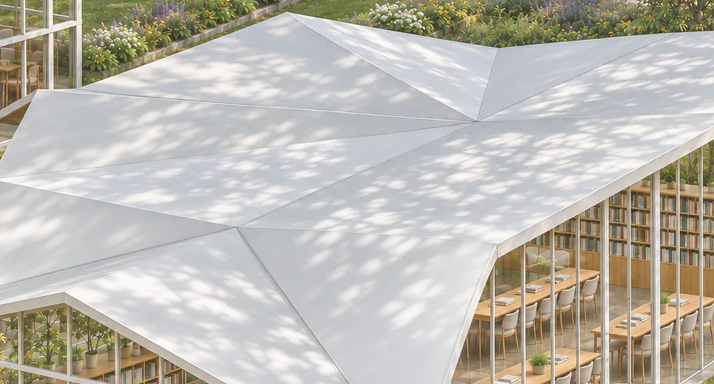
La hojaSuperficie blanca que refleja el sol y da sombra fresca; sus pliegues la vuelven liviana y firme a la vez.
 El tronco
El troncoListones verticales y decks que aportan calidez y textura al tacto, filtran la luz como un bosque y marcan los recorridos.
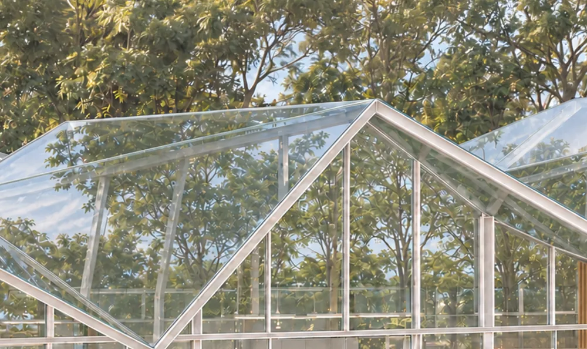
La transparenciaFachadas vidriadas que dejan ver lo que pasa adentro: el taller invita, el jardín entra y nadie queda aislado.
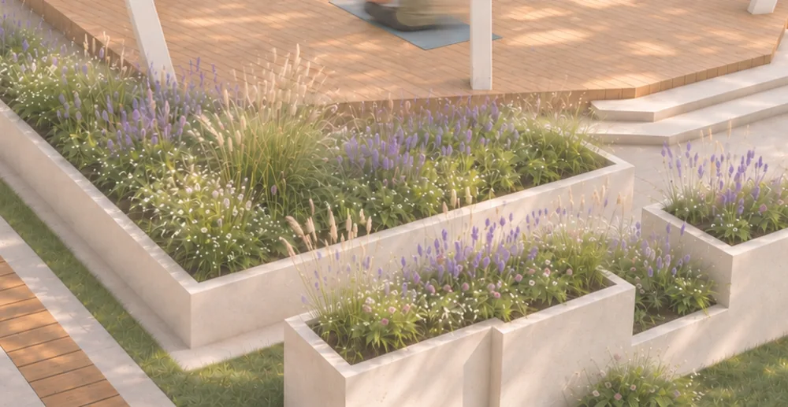
La raízCanteros con cordón de hormigón y caminos con bandas de madera: la base firme que sostiene y ordena el verde.
Cada pieza del parque está pensada para un cuerpo que ya recorrió mucho camino. Sentarse, levantarse, tomar agua o encontrar sombra tiene que ser fácil, seguro y placentero, sin depender de nadie.
Por eso el mobiliario nace del mismo suelo que el jardín: los bancos son canteros, el bebedero brota de una jardinera y los materiales son los de la naturaleza —madera, piedra y tierra—, en tonos cálidos que se distinguen bien y no encandilan.
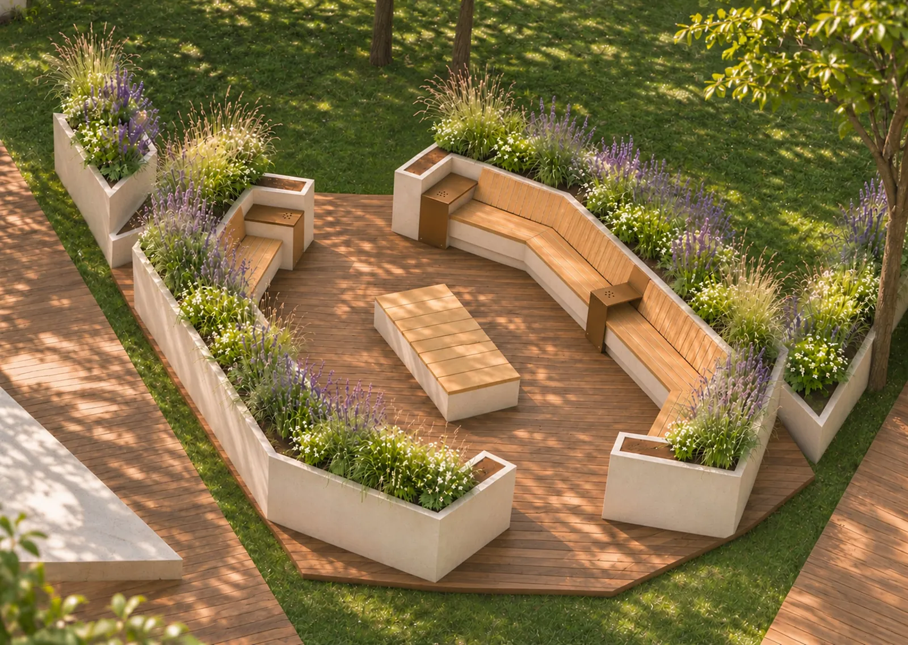
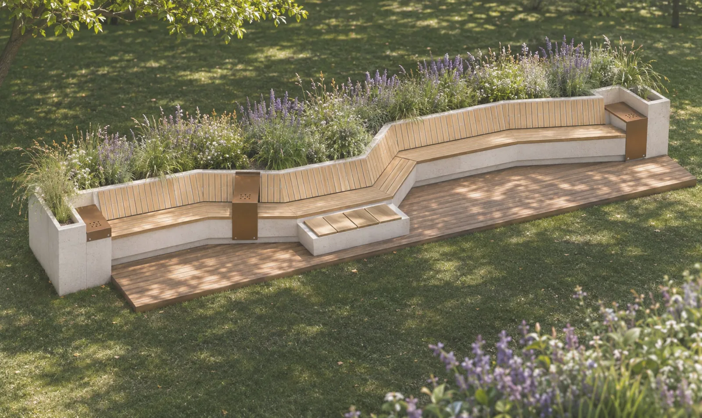
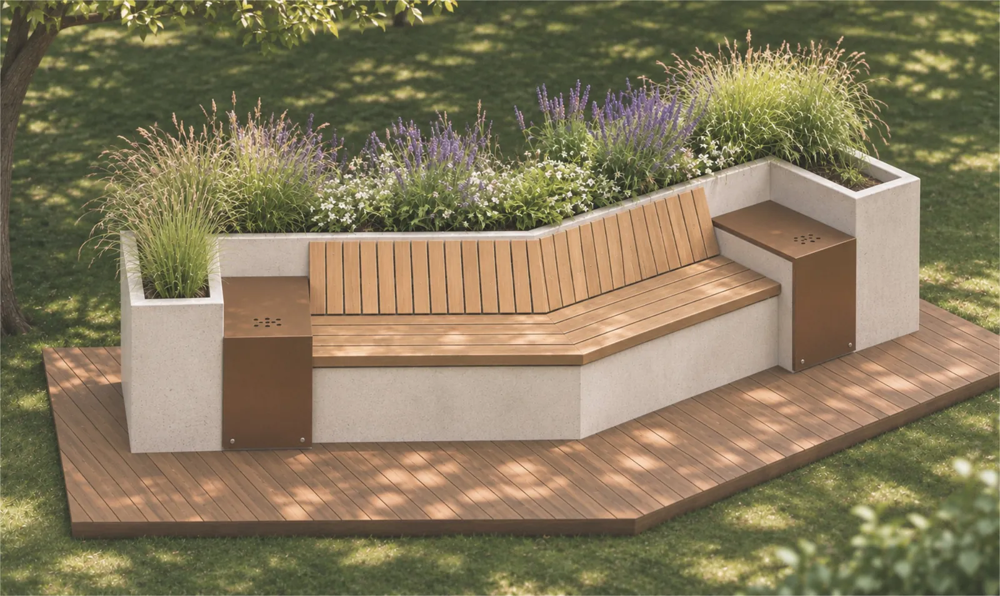
Banco y cantero son una sola pieza: el respaldo de madera se recuesta sobre la tierra plantada y quien se sienta queda rodeado de lavandas y gramíneas, con su aroma y su movimiento. La línea quebrada del banco arma rincones para conversar de a dos o en ronda.
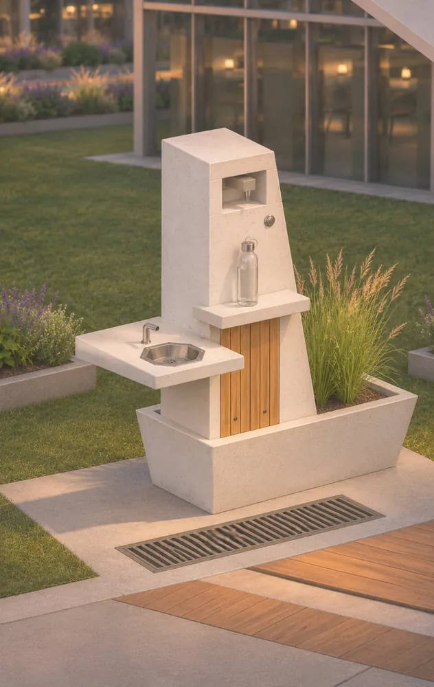
HidrataciónUna mesada baja con pileta para tomar agua o lavarse las manos, cómoda también desde una silla de ruedas, y una canilla más alta para cargar la botella, con un estante donde apoyarla. Se acciona con un botón grande, sin girar ni hacer fuerza, y una rejilla al pie evita charcos y resbalones. Su base es una jardinera: el agua siempre aparece entre el verde.
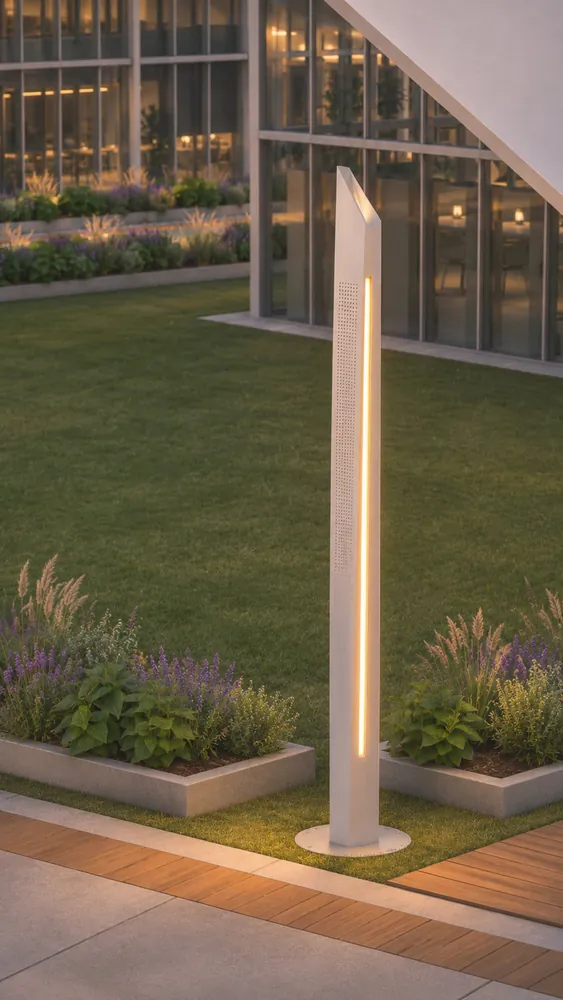
LuzColumnas blancas plegadas como las cubiertas, con una línea de luz cálida a la altura del cuerpo. Iluminan caminos y bordes sin encandilar, para recorrer el parque al atardecer con seguridad, y de lejos funcionan como referencias para orientarse.
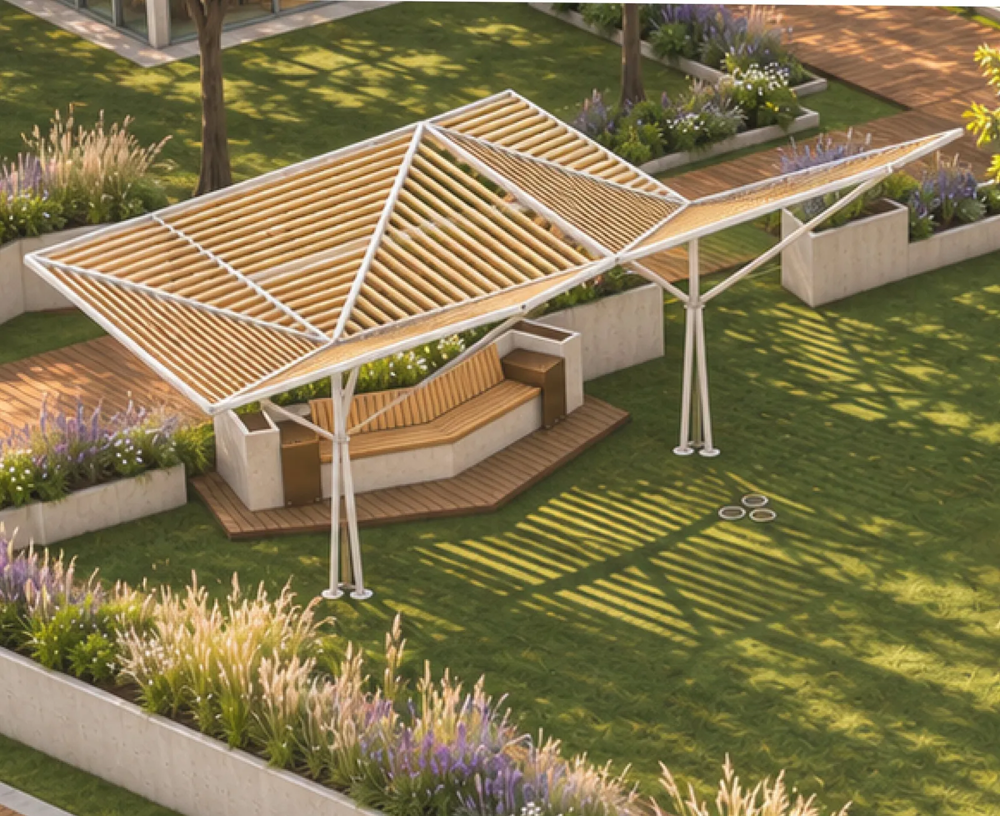
SombraEstructuras blancas que se abren como ramas y sostienen una cubierta plegada de listones de madera. Dan una sombra filtrada, como la de un árbol: protegen del sol del mediodía sin quitar la luz ni el aire, y dibujan sobre el césped el mismo ritmo de los bancos.
Tibia y amable con la mano: está donde el cuerpo se apoya, en asientos, respaldos y tarimas.
Base firme y luminosa que refleja la luz, se mantiene fresca y resiste el uso diario a la intemperie.
Un tono tierra marca los apoyos y los puntos de uso: contrasta con el blanco y la madera y se encuentra sin buscar.
Cada pieza trae su cantero: descansar, tomar agua o esperar es hacerlo entre plantas, aromas y sombra.
Recorrer SAVIA tiene que ser tan simple como llegar. Por eso el sistema de señales está pensado primero para quien lo usa: personas mayores que caminan a su ritmo, que pueden ver o recordar con menos facilidad y que necesitan confiar en que van a encontrar el lugar que buscan.
Las señales repiten la misma información en distintas alturas y soportes —en la pared, en un tótem, en el piso y en los canteros—, con letras grandes, alto contraste y flechas claras. Y hablan el mismo idioma que la arquitectura: la placa blanca se pliega como las cubiertas, la luz cálida marca el pliegue y el hormigón y la madera son los mismos del recorrido.
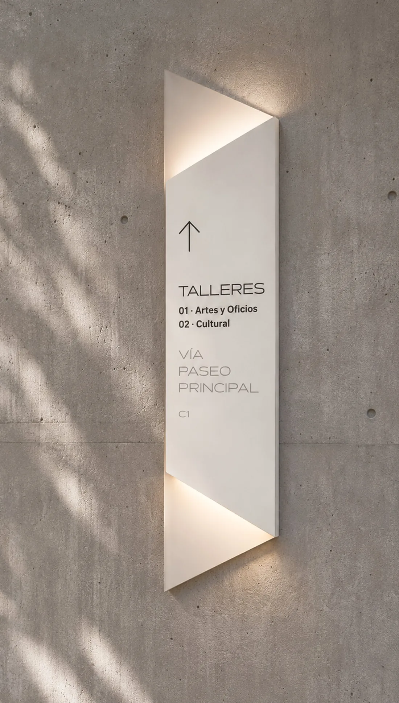
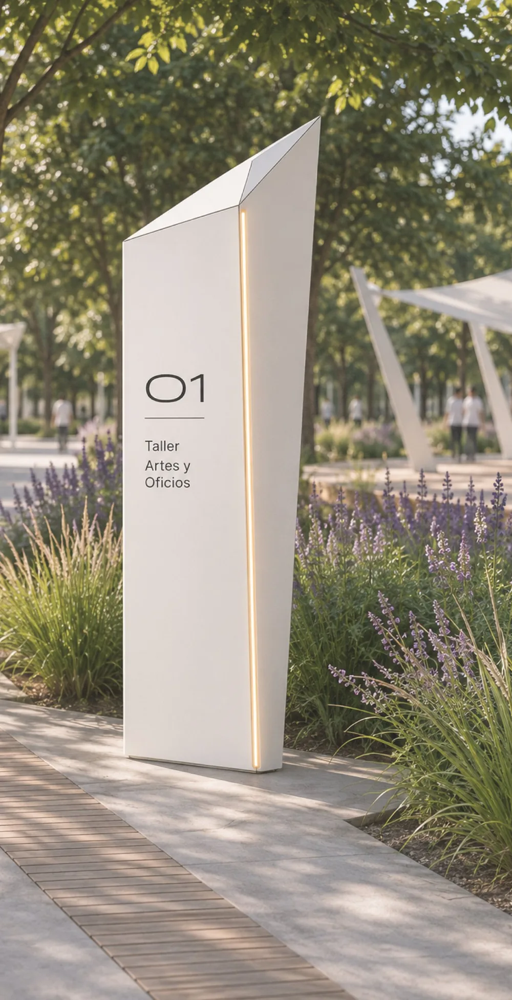
LlegadaA la entrada de cada pabellón, un tótem a la altura de la vista confirma dónde estás con un número grande y el nombre del espacio. Su remate plegado lo vuelve reconocible de lejos.
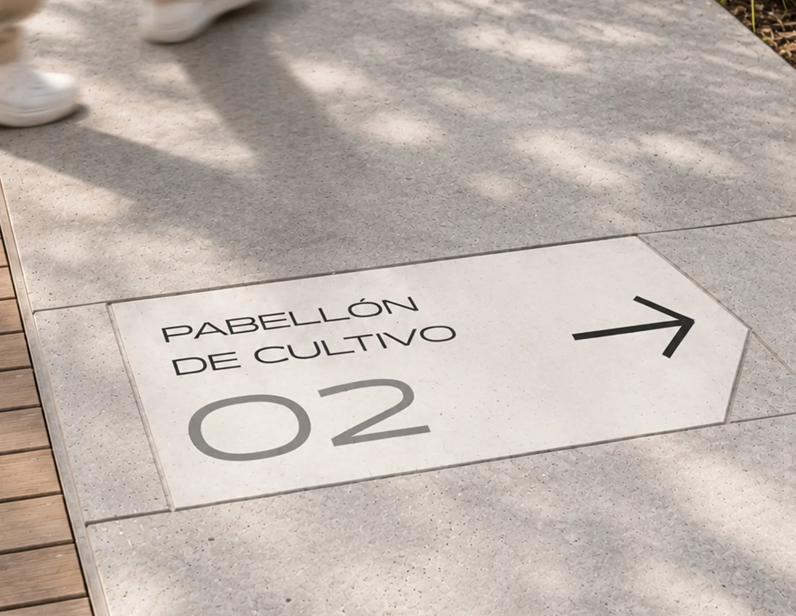
RecorridoPara quien camina mirando dónde pisa, la orientación aparece en el solado: placas al ras, sin desniveles, con el destino y la dirección a seguir.
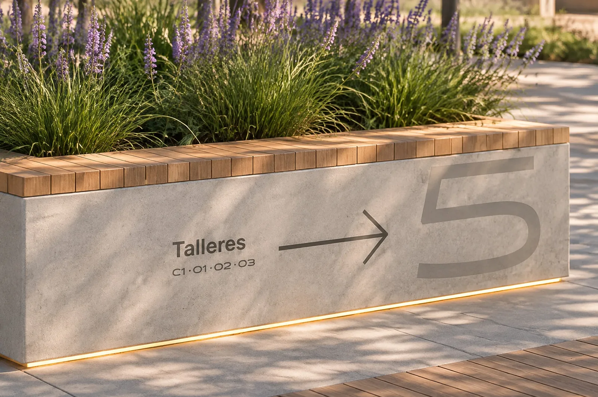
PausaLos mismos canteros que ordenan el verde llevan la información en su frente. Mientras alguien descansa en el banco, sabe hacia dónde seguir; de noche, una línea de luz marca el borde.
Letras grandes y trazo negro sobre blanco o gris claro, para leer sin acercarse.
La misma información en pared, tótem, piso y cantero: si no se ve una, aparece la otra.
Un número y un nombre por espacio, y una flecha. Fácil de recordar y de repetir.
Pliegue, luz cálida, hormigón y madera: la señal es parte del mismo sistema que la arquitectura.
Pósters de la campaña: talleres, agenda diaria e invitación a participar.
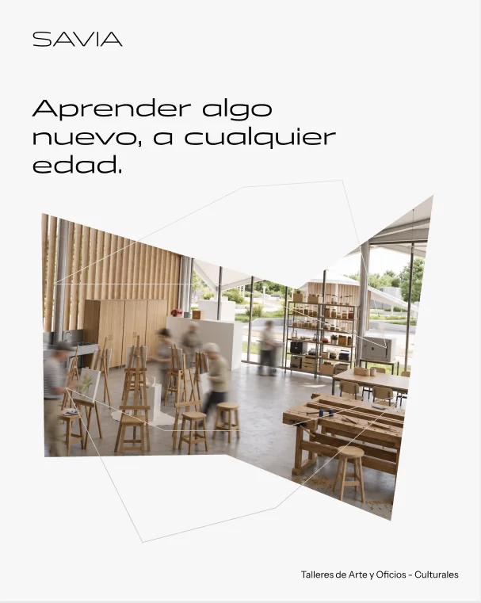
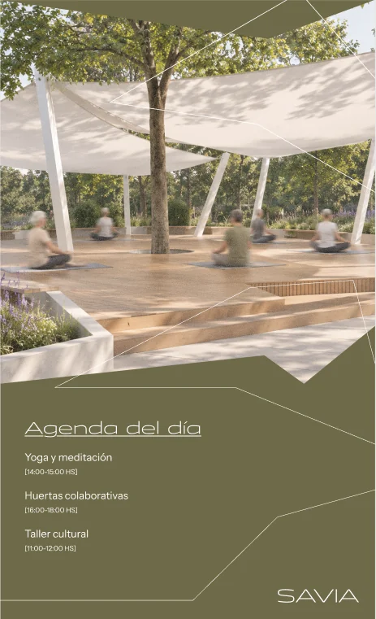

Creá tu cuenta en la app de SAVIA para sumarte a la comunidad. Desde ahí vas a poder:
Agenda de ejemplo, tomada del póster de la campaña.